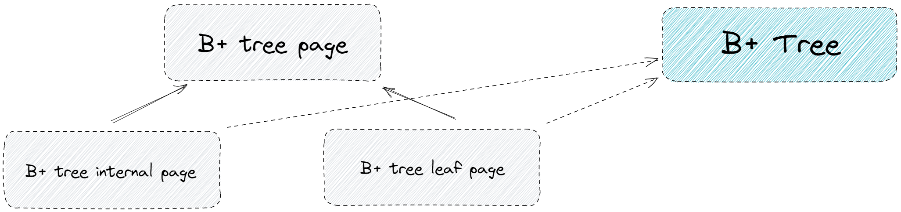
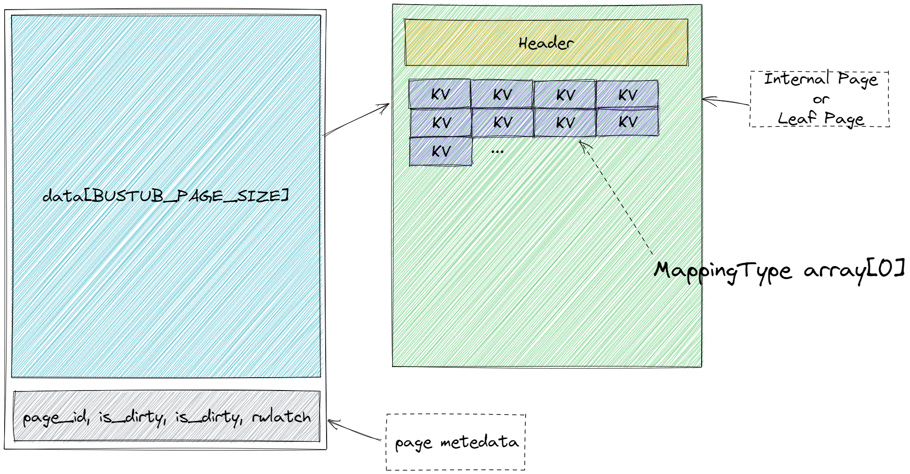
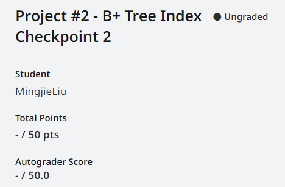

CMU15445-project2 Concurrent B+ tree
本文最后更新于：2 天前
Overview
这个实验应该是最难的一个实验了。。。（感觉和Project 4 —— Transaction实现的难度差不多） 另外，2022fall版本的B+ tree更是变态，因为几乎没有给任何内部的API，让人无从下手。建议到 Github repo 里找到20年的，我基本是根据里面定义的函数来实现的。
实验材料贴心的为你分成了两个检查点，四个小任务。
Checkpoint #1
- Task #1 - B+Tree Pages
- Task #2 - B+Tree Data Structure (Insertion, Deletion, Point Search)
Checkpoint #2
- Task #3 - Index Iterator
- Task #4 - Concurrent Index
Task #1 - B+Tree Pages
第一个任务算是热身，主要是搞清楚 B+ 树的一些类之间的关系。
我们知道，数据库中的索引也是数据，同样以 page 的形式被组织。我们先来看看要完成的这些类之间的关系。

B+ tree internal page 与 B + tree leaf page 都继承自B + tree page，B + tree page 中定义了 B+ 树每个结点的一些信息。而B + Tree 这个类则是Checkpoint 1的主要对象，它对internal page 以及 leaf page 进行管理，并对外开放接口。而在内存中，internal page 与 leaf page 都属于 page 的一部分，关系如下图所示。他们就是 page 中的 data 部分。因此，每次
从 buffer pool manager 得到一个 page 后，若是将他们用作 B+树的结点，则需要对这个 data 进行释义，也就是将他强制转化为internal page 或者 leaf page。这在 C++ 中通过 reinterpret_cast 完成。

然后就是一些getter，setter的实现。这个 MappingType array[1] 是个奇技淫巧叫flexible array member，由于整个internal page的大小是确定的（由data[buffer_size]转义而来），这个 array 的大小就是去掉 header后的大小。（另外，实际上应该写作 MappingType array[0]，不然过不了 check-format）。
Task #2 - B+Tree Data Structure (Insertion, Deletion, Point Search)
这个任务就是本实验最为核心的一点——实现基于磁盘的 B+ 树数据结构。这里不会详细展开，因为过于复杂且很多细节因为忘光了。给个20年fall的B+ tree，功能是一样的，但是提供了完善的内部接口，照着这个和书上完成要清晰不少。
debug
TAs准备了b_plus_tree_printer工具，并且已经准备的Draw/ToString方法，善用它们将B+树可视化，更好的观察插入、删除行为是否正确。 示例：
1 | |
得到生成的文件后打开，可以和reference solution比较。
Task #3 - Index Iterator
我想重点说下这个 iterator 的实现，因为在这个实验中，我调了最久的 bug 就出现在这个子任务中。（实际上已经过了lab-2的评测已经过了，是在 lab3评测时发生锁资源的问题）
记得哪个大佬说过，如何看一个人的 C++ 水平，从他写的构造函数就可以略窥一二。C++ 的构造函数属实花里胡哨，copy ctor, copy assignment, move ctor, move assignment , 再加上 initializatier list以及模板… 哪些要写，哪些应当禁止都是门学问。
根据 RAII 的思想，C++ 的 contructor（配合dtor）肩负了管理资源的作用。这个资源不知包括内存资源，还包括锁资源等等。而对于 Index iterator 来说，每个 iterator 都带有一个隐含的读属性，并发读要求对 page 上读锁，但是我们的 iterator 又不直接管理 page 资源，需要通过传入指针（用shared_ptr最好）的方式对 page 进行操作。
我们来看这个例子 在
1 | |
这是lab3中用到索引迭代器的一个地方的代码。注意到这会产生一个临时对象，并把它赋值给 index_iter_。如果我们在析构的时候释放了对应 page 的锁而没有写copy assignment，编译器生成的assignment是不会在赋值的时候为page上锁的。
这个bug归根结底在于，我们的迭代器应该是 值语义(value semantic) 的（至少对于锁资源来讲）
我们用 copy and swap idiom 来解决这个问题
1 | |
Task #4 - Index Iterator
这是并发 B+ 树的重点。我们要使此前实现的 B+ 树支持并发的 Search/Insert/Delete 操作。整棵树一把锁逻辑上来说当然是可以的，但性能肯定不行，我们需要更加细粒度的锁管理。在这里，我们会使用一种特殊的加锁方式，叫做 latch crabbing。顾名思义，就像螃蟹一样，移动一只脚，放下，移动另一只脚，再放下。基本思想是：
- 先锁住 parent page，
- 再锁住 child page，
- 假设 child page 是安全的，则释放 parent page 的锁。安全指当前 page 在当前操作下一定不会发生 split/steal/merge。同时，安全对不同操作的定义是不同的，Search 时，任何节点都安全；Insert 时，判断 max size；Delete 时，判断 min size。
这么做的原因和正确性还是比较明显的。当 page 为安全的时候，当前操作仅可能改变此 page 及其 child page 的值，因此可以提前释放掉其祖先的锁来提高并发性能。
最后是AC截图：

Resources
- 课程官网
- Github Repo
- Youtube课程视频 2022fall （如果对英文字幕有压力的话可以在 chrome 插件里下个中英文双字幕插件）
本博客所有文章除特别声明外，均采用 CC BY-SA 4.0 协议 ，转载请注明出处！